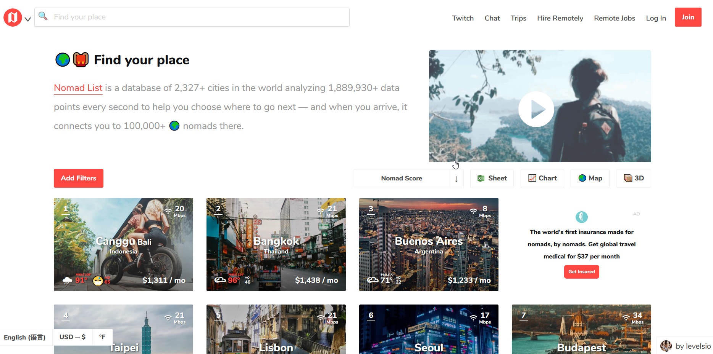

This post is a report of the Usability test done on the website, Nomad List. Nomad List self describes itself as a database of 2300 plus cities in the world with thousands of data points analyzed to help travelers and more specifically digital nomads to analyze places the best fit their needs.
The ideal user base for this site are tech savvy travelers familiar with analyzing data sets. The testers used for this usability study ranged from high to moderate web users.
The Testers:
- Tester 1 - 34 year old Male, Software Engineer
- Avg hours spent online daily: 8 hrs
- Sites browsed: News pages, technical documentation blogs, Wikipedia, forum sites
- Favorite sites: Stack overflow, Wikipedia
- Tester 2 - 30 year old Female, Insurance Account Specialist
- Avg hours spent online daily: 12 hrs
- Sites browsed: Social Media, travel sites, flight ticket sites, google images, Wikipedia, siccode.com
- Favorite sites: Facebook
- Tester 3 - 57 year old Male, Self Employed Entrepreneur
- Avg hours spent online daily: 2-3 1/2 hrs
- Avg hours spent online daily: 2-3 1/2 hrs
- Favorite sites: YouTube, Google Scholar search
The Process
The testing for this usability test was performed one on one with each of the testers mentioned above. All the testers were unfamiliar to the site before the usability testing began. Steve Krug's User Testing Script was the foundation for the script used for these testing sessions. Each Tester was introduced to the usability test process and asked to detail their thoughts as the perused the site and completed the requested tasks.
Upon opening the link to the homepage, the testers were asked to review the homepage and give a brief description of what their thoughts were on what the purpose of the website was and what service it was providing. After relaying their initial thoughts, the were asked to do 3 tasks while expressing their thoughts/process and in the end to provide a closing review of the site, their experience using it, what they liked or didn't.
The User Test Script
Intro Review Question: Look at this page and tell me what you make of it; what strikes you about it, whose site do you think it is, what you can do here, and what is it for? Just look around and do a little narrative.
Intro Question - Tester Response Notes:
- Tester 1: "It's a website that lists a bunch of cities in the world and a bunch of data points, to allow you to research specific areas." Thinks it's purpose is to harvest the user's data and evangelize the travel industry.
- Tester 2: "It's so cool!" Likes the description on the top front page but the numbers could be more generalized. In the city pics, questioning if the dollar amount in the left bottom corner is the cost of living there or how much one makes, thinks its a little unclear. Sees the acronym AQI and states she doesn't know what it means. Tried to scroll to the bottom but the lists keeps going.
- Tester 3: "It's too much information. A lot of clustering." Comments that there were lots of links and buttons that aren't familiar. Thinks the page looks like a specific research site for travel agents. Doesn't look consumer friendly on first impression. Showing more and more cities as he scrolls down, comments "there doesn't seem to be an end". "Based on the description listed on the top it's for trained professionals. It's very complex." Having a hard time understanding what the amount is in bottom left of each picture. "What does Mbps stand for?" Unable to tell what this data is for. Having a hard time determine what the site is for. Comments on the "Find your place" tagline, "find your place for what? It looks like a database."
Task 1: Please find the least expensive travel destination with the highest ranking
Tester Response Notes:
- Tester 1: Clicked on "Add Filters" and selected "<1000 a month" filter. Determined Minsk, Belarus was the least expensive highest rated.
- Tester 2: Clicking on "add filters", looking through all the filters. Closed filters, clicked on "Nomad Score". Listed in order of cost of living and then went to filters and clicked "top ranked". Found Nha Trang, Vietnam comes up as the lowest cost of living with highest nomad score.
- Tester 3: Tried to use search bar. Hovers over the pictures. Goes all the way down.. clicked on chart. Not able to determine from chart. Comments "I don't see anything least expensive or most expensive."
Task 2: Can you locate the map feature and do your best to explain the scale and scoring the website uses to score featured places on the map; Are you able to find a safe and warm destination using the map feature?
Tester Response Notes:
- Tester 1: Clicks on Map, the page filters for "<1000 a month". The filter had persisted. Scoring was a dollar amount. The scale is color coded for the filter based on dollar amounts. was able to locate Kathmandu as one of the highest rated, safe and warm destinations.
- Tester 2: Clicks on Map, it focused on the eastern hemisphere and filters persisted. "Based on the map feature, I am thinking that the value listed is the cost of living per month in that particular destination. The scale is a bit weird, it's color coded, seems to be highest lowest." Went to filters, clicked top ranked and safe. Confused by the Portland result. Hovered over the list order drop down to nomad score and on map filtered by warm and safe. Top result found Bangkok or Buenos Aires. Found a destination rated 5, Canggu, Bali. Tried to zoom in, but there is no zoom in button, so a little difficult to figure that out, used track pad. Saw that there a "Cookie clustering" button that is covering part of the legend. "Kind of an inconvenient place for the alert."
- Tester 3: Found the map easily. "I see the colors on scale but not able to determine what they stand for." Clicked on warm safe and top ranked filters. Found Tbilisi, Georgia - 4 - orange. Clicked on the Nomad score filter arrow but was confused at the sorting.
Task 3: Can you figure out what it costs to join and would you feel comfortable purchasing one of the packages. ?
Tester Response Notes:
- Tester 1: Found the "Join" button easily, comments that packages look too expensive. It doesn't look like a company that will be around forever.
- Tester 2: "... it's not necessarily apparent how to go home or go back. Went from map screen to the chart screen and saw the join button on the top right. Found the menu and the "Join" button was also there. The join page is nice because it seems too simple. The cost of the packages seem high for the lack of information the page asks when asking for your credit info.
- Tester 3: Clicked button and tried to go back but not able to go back. Entered the URL to get to the Homepage. Unable to determine the value of the packages.
Closing Review - Tester Response Notes:
- Tester 1: "It does what I believe it advertises.
- Tester 2: "I can't decide if it's too busy or not. I like it visually, finding it to be a complex thing but the layout is simple and clear." Found the 3D mode in Grid to be cool. Had a little trouble clicking on 3D mode. Likes the review page. Thinks its an amazing website and is surprised she's never heard of it. Don't see a clear logo or what the home screen is. Had re-enter the URL to verify that the home screen was the grid screen, but the previously seen description no longer appeared.
- Tester 3: "If I was a professional adviser on travel but other wise I'm not convinced" Generally had a heard time understanding what the site was all about. Commented "Built by very intelligent people but emotionally unintelligent."
Summary
Overall the testing showed that though the site delivered a lot of useful, detailed content, it was delivered in a way not usable or accessible by all. Each one of the test users struggled figuring out how to get back to the home page, struggled understanding the scale and many of the acronyms, and in the end the package pricing and payment page did not help resolve the initial confusion in navigating through the pages and did not have some of the familiar content surrounding the payment inputs, which caused skepticism for the one tester that showed the most interest in the product.
Suggested improvements based on user testing of Nomad List website:
- Create a clear homepage describing the product and functionality of the page.
- Limit the number of city's that will display on the page and create a footer for easier navigation.
- Incorporate legend or small info pop-ups for acronyms and metrics used.
In closing, testing found that more tech savvy travel buffs were willing to overlook some of the difficulties of navigating the page and figuring out what all the metrics and acronyms meant, but for most users, the complexity of how the content was presented and the lack of a simple and clear navigation caused visible user frustration.